Le silence est étrange… Voire inquiétant. Tout d'abord parce qu'il est extrêmement rare et que le bruit fait partie intégrante de notre environnement, de plus parce que nous entendons généralement ce que nous voyons alors que l'inverse n'est pas vrai, et enfin parce que le bruit est justement notre seule source d'information sur ce qui se situe hors de notre champ de vision et permet donc d'anticiper le danger ou de nous adapter à l'imprévu…
Par suite, un objet volant ou un phénomène lumineux peuvent devenir « étranges » du simple fait qu'ils ne soient pas entendus. Ou inversement, un bruit violent peut être perçu comme signe de danger et l'inquiétude peut subsister si aucune image ne vient expliquer ce bruit. Quelques cas sont récurrents.
En particulier s'il est habituel, ne serait-ce que pour des raisons professionnelles, nous nous habituons très vite à un bruit ambiant important qui, de plus, provoque une fatigue auditive diminuant nos capacités auditives durant plusieurs heures. Ainsi, il n'est pas rare que nous soyons entourés d'un bruit permanent de 80 à 90dB sans en prendre conscience, ou en ne le réalisant que lorsqu'il stoppe. Par exemple dans notre voiture, sur l'autoroute, avec la ventilation et la radio en fond sonore. Ou à pied en centre ville avec un MP3 sur les oreilles. Ou encore en présence de climatisations ou d'ordinateurs ventilés.
Dans le même temps, nous « négligeons » subjectivement l'atténuation d'un bruit due à la distance. Un « gros objet » nous parait devoir être très bruyant, même s'il est loin. Ainsi, nous nous attendons à être assourdis par un avion gros porteur ou par une Formule 1, même éloignés.
Or, pour reprendre cet exemple et en utilisant les règles de propagation et d'audition vus par ailleurs, même le bruit d'une Formule 1 ne sera plus perceptible depuis l'intérieur d'une voiture au-delà d'une distance voisine de 50m !
Dans de nombreux cas, le « silence apparent » d'un phénomène, paraissant initialement étrange, est donc en réalité parfaitement naturel.
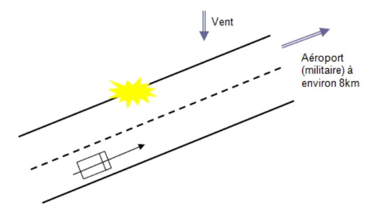
Un matin d'hiver, par temps froid et venteux, le témoin se rend à son travail en empruntant la même route que tous les jours. Il aperçoit de loin une lumière importante lui paraissant immobile et vers laquelle il se dirige jusqu'à avoir la sensation de « passer juste dessous ».
Bien qu'un aéroport militaire se situe à quelques kilomètres dans l'axe de la route, il écarte l'hypothèse d'un avion car il n'a rien entendu alors qu'il sait, par habitude, que les avions sont généralement très bruyants.
Après enquête, il apparaît pourtant qu'un avion gros porteur a décollé à ce moment là et pourrait être en cause. Reste à déterminer s'il est possible que le témoin n'ait rien entendu… Et pour cela, il faut commencer par analyser l'environnement et le bruit ambiant.
En premier lieu, on constate que le terrain avoisinant est parfaitement plat, constitué de terrains argileux plantés d'herbes, et n'a à priori pas eu d'effet sur le bruit, hormis un léger effet amortissant limitant la réverbération sur le sol.
En second lieu, on note que du fait du temps, le témoin roule vitres fermées et avec le chauffage ainsi que la ventilation poussée quasiment au maximum. Il a par ailleurs allumé son poste de radio et écoute de la musique à un niveau qui lui parait raisonnable mais qui est toutefois suffisamment important pour couvrir les bruits du moteur et de la ventilation.
En conditions de circulation, le bruit ambiant à l'intérieur d'une voiture est de l'ordre de 60dB. La ventilation représente un bruit paraissant important, et l'ensemble peut donc être estimé à 70dB. Par ailleurs, la radio ne sera distinctement audible que si elle représente une « augmentation » sonore de quelques dB. Au final, le bruit ambiant dans l'habitacle représente donc approximativement 75dB.
Un bruit extérieur ne pourra donc être perçu à l'intérieur de la voiture que s'il est suffisant pour représenter une augmentation de quelques dB, c'est-à-dire un niveau sonore total de l'ordre de 78dB. Autrement dit, être lui-même voisin de 75dB minimum. Encore, à ce niveau et bien que le témoin soit relativement jeune, risque-t-il d'être « ressenti » comme partie intégrante du bruit moteur de la voiture, en particulier par un effet de masque si le niveau sonore a monté progressivement (voiture approchant progressivement de la source sonore), et donc ignoré.
De plus, les vitres sont fermées ce qui atténue les bruits extérieurs d'une valeur minimale de 15dB. Ce bruit additionnel devrait donc être de l'ordre de 90dB (75+15) minimum, voire 93dB, à proximité de la voiture pour être entendu.
En troisième lieu, le bruit d'un avion à 20m est de l'ordre de 100dB, atténué de l'ordre de 6dB à chaque fois que la distance est doublée, ce qui est représenté ci-dessous.
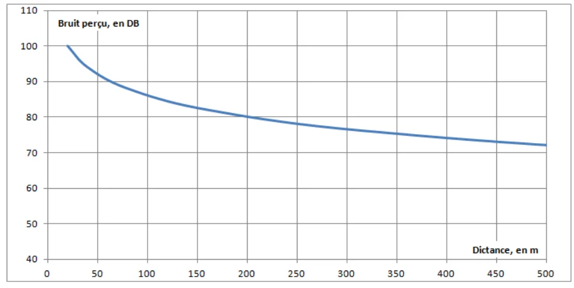
On constate donc que, dans les premières dizaines de mètres, le bruit est très rapidement atténué et devient très vite inférieur à 90dB. Or un avion gros porteur qui aurait décollé d'une piste distante de 8km, ce qui est le cas ici, serait déjà à une altitude de l'ordre de 250m, distance à laquelle il ne « représente » plus qu'un bruit de l'ordre de 78dB dans ces conditions de propagation.
Indépendamment des autres données de l'enquête, et sans rentrer dans des calculs de plus haute précision, il est donc parfaitement plausible que le témoin soit passé ce jour là sous un avion gros porteur au décollage sans l'entendre.
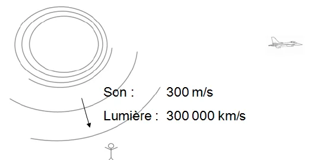
Même s'il reste en vol subsonique, un avion peut paraitre silencieux du simple fait de la distance. Cela est lié au fait que son image nous parvient quasi instantanément alors que son bruit met plusieurs secondes à nous parvenir. Ainsi, le son d'un avion moyen courrier volant à 5000m met de 15 à 22 secondes à nous parvenir (suivant l'angle et les conditions atmosphériques) alors que, dans le même temps, cet avion volant à 900 km/h aura parcouru plus de 6km.
Par suite, 2 cas peuvent paraitre étranges :
Noter que, outre ces aspects, le son d'un avion peut être fortement atténué ou au contraire accentué par diverses composantes telles que des couches atmosphériques faisant « guide d'onde » et limitant la propagation du son vers le sol, ou par des réflexions parasites sur des éléments environnants tels que murs d'immeubles ou flans de vallées. Suivant les cas, ces réflexions pourront rediriger le son ou créer des interférences et en augmenter ou en diminuer le niveau sonore.
Il est par ailleurs nécessaire de prendre en compte l'effet Doppler :
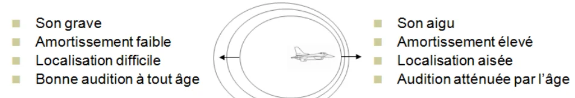
Le son émis vers l'avant de l'avion est beaucoup plus aigu que le son émis vers l'arrière, la différence étant d'autant plus importante que l'avion vole vite.
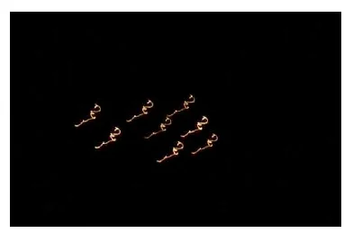
Or des sons aigus sont beaucoup plus amortis que des sons graves (amortissement quasiment proportionnel à la fréquence et dépendant des conditions atmosphériques). Ainsi, à 4000Hz, l'atténuation peut représenter 50dB par km.
De plus, la presbyacousie (diminution des capacités auditives avec l'âge) rend ses sons aigus d'autant plus difficiles à entendre que la personne est âgée.
Par suite, il est beaucoup plus difficile d'entendre (et de localiser) un avion venant vers nous qu'un avion s'éloignant.
Ci contre l'exemple de la patrouille de France en vol de nuit le , ayant donné lieu à plusieurs témoignages et à une enquête du GEIPAN GEIPAN: PAN classé A.
Outre les temps de parcours différents pour la lumière et le son, le cas du mur du son est particulier et il est rare, maintenant, qu'un avion en vol supersonique soit entendu.
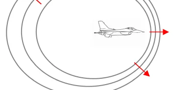
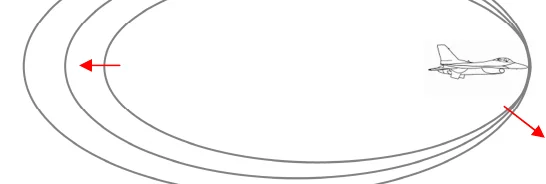
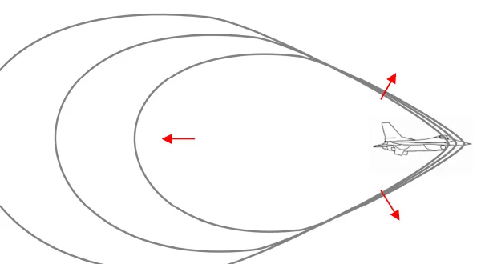
S'il franchi le mur, il passe en vol supersonique et est « suivi » par les ondes sonores qui forment alors un cône d'autant plus fermé que l'avion va vite. Ce cône est en fait constitué d'une onde de choc (ou onde de surpression) qui provoque un « bang » lorsqu'elle rencontre un élément solide, qu'il s'agisse des ailes et de l'empennage de l'avion ou du sol.
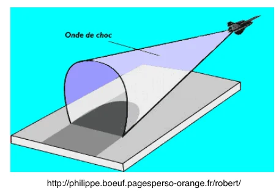
Sur les schémas précédents, les flèches rouges indiquent le sens de propagation des ondes sonores. A l'avant de l'avion en vol supersonique, c'est le silence. Il faut se trouver à l'intérieur du cône de Mach pour que l'avion soit audible.
Plus l'avion vole vite, plus le cône est refermé, et plus rares seront donc les zones au sol pouvant se trouver dans ce cône.
On note d'ailleurs que, s'il était autrefois habituel d'entendre le « bang » d'un avion franchissant le mur du son, les normes environnementales ont maintenant imposé des routes de vol telles que cela devient de plus en plus rare au point de faire l'objet de la surprise générale et d'articles dans les journaux.
Le vent (et les variations de température) ont plusieurs effets sur la propagation du son…
Le principal est qu'un son se propage mieux dans le sens du vent que contre le vent. Cela est lié à des effets de densité de l'air provoquant des déviations, voire des diffractions du son vers le sol ou vers le ciel, liées essentiellement au fait que le vent est moins fort au sol qu'en altitude.
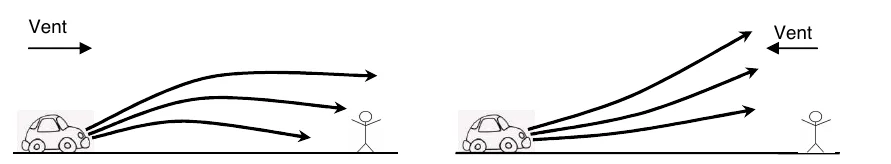
Un paramètre, moins connu mais tout aussi réel en particulier sur les grandes distances, est une conséquence de l'effet Doppler et augmente l'amortissement des fréquences élevées (aigues) en présence de vent, en particulier dans le sens du vent. En présence de vent, un son paraitra donc plus grave qu'en temps normal.
Tout comme la forêt, un brouillard dense est très amortissant et diffuse les sons qui paraissent anormalement graves, lointains, difficile à localiser. Dans une moindre mesure le même phénomène d'étrangeté des sons perçus peut se produire en cas de forte pression atmosphérique, de temps humide (amortissement faible et sons paraissant donc au contraire plus aigus), de temps orageux, …
Dans le même ordre d'idée, en présence de neige il n'y a quasiment plus de réverbérations des sons sur le sol. L'environnement sonore parait particulièrement silencieux, et même la voix est perçue comme étrange. Inversement, la glace accentue la réverbération et l'environnement paraitra particulièrement sonore.
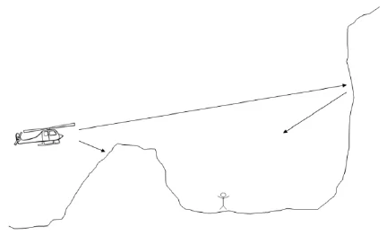
Des fossés, des talus, peuvent provoquer des zones d'ombre acoustique handicapant la perception du son d'un aéronef ou autre véhicule. Inversement, la forme de certaines vallées amplifie tout son venant du ciel, par des phénomènes géométriques voisins de ceux des antennes paraboliques. Un avion ou un orage peuvent alors paraitre anormalement bruyants.
Des immeubles, des falaises, des murs de béton ou de verre peuvent constituer de bons réflecteurs et transmettre un bruit dans une direction surprenante, voire le transmettre dans des zones d'où leur source est invisible.
Une rivière peut constituer un excellent guide d'onde et permettre d'entendre un bruit supposé faible (conversation, petit moteur, …) à plusieurs km.
Enfin l'important…
Une première règle est que les composantes sonores sont importantes dans tous les cas, au même titre que le reste du témoignage, qu'elles aient été citées comme « étranges » ou non par les témoins.
Les exemples et cas particuliers précédents sont révélateurs des éléments importants, à prendre en compte lors du recueil des témoignages et relativement peu nombreux :
Ces données permettront ensuite d'expliquer certaines composantes paraissant initialement étranges (en particulier dans le cas du silence apparent) ou de discriminer diverses hypothèses :